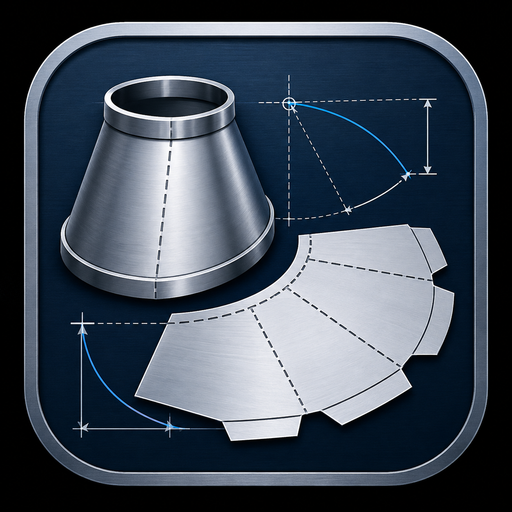
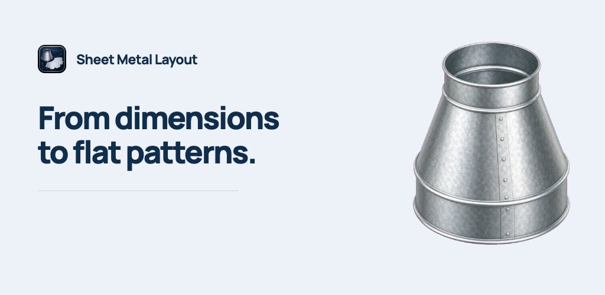
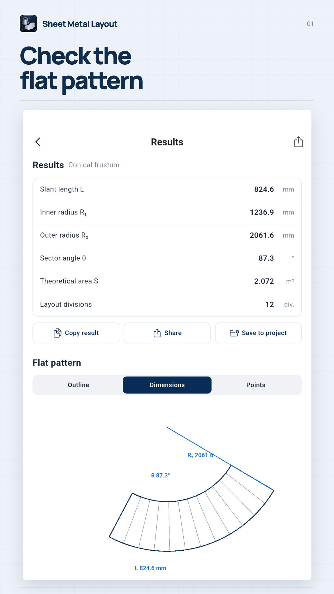
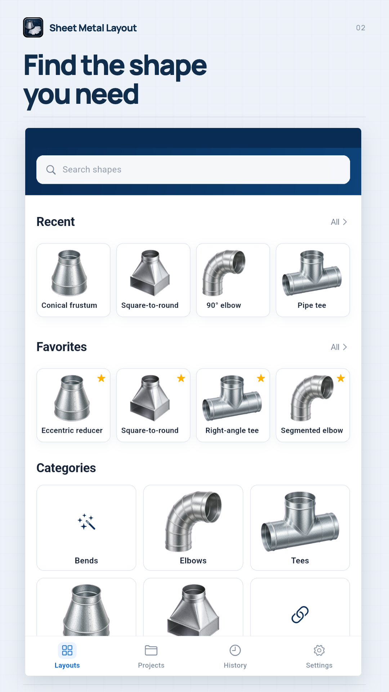
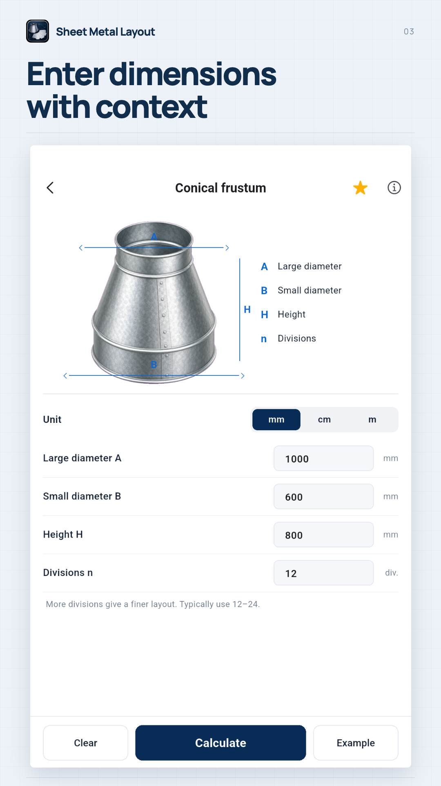
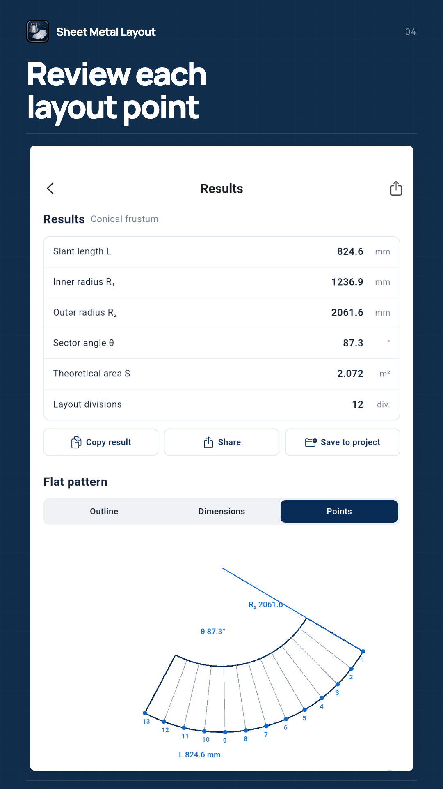
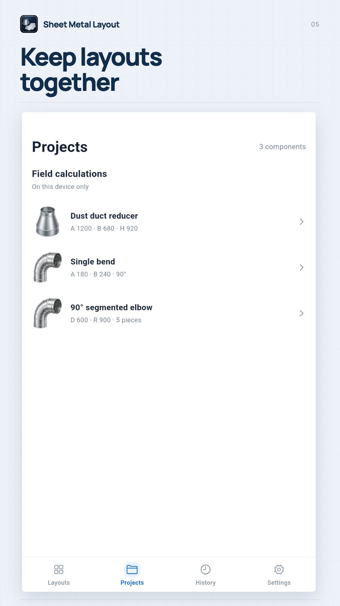
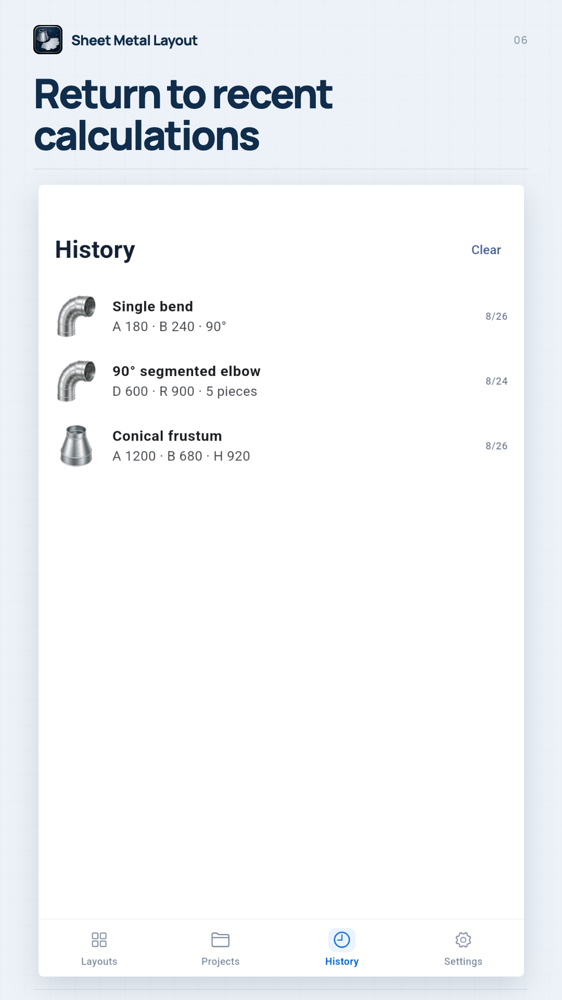

Google Play · English (United States)
Android screenshots rendered. Check them against the release build before upload.








Sheet Metal Layout Calculator
Calculate cones, bends and transitions with clear flat-pattern diagrams.
Sheet Metal Layout Calculator helps fabricators, sheet metal workers and ductwork installers check development dimensions on site. CHOOSE A SHAPE Work with concentric and eccentric cone frustums, single bends, segmented elbows, intersecting round pipes and square-to-round transitions. ENTER DIMENSIONS WITH CONTEXT Use illustrated parameter positions to enter diameters, heights, thickness, bend angles and offsets. Input checks flag invalid dimensions before calculation. Length inputs use millimetres, centimetres or metres. REVIEW THE RESULTS For supported shapes, inspect development dimensions, true lengths, numbered points and clear diagrams. Cone calculations show slant length, sector radii, sector angle and theoretical area. Single-bend calculations include bend allowance and bend deduction using a K factor. SAVE AND REUSE Keep calculation history on your device, save supported results to a local project and return to recent inputs. Copy or share result text through the system share sheet. WORK OFFLINE Core calculations do not require an account or network connection. No ads or subscriptions are included in the current app. This app provides ideal geometric calculations for layout assistance. Results do not automatically include seams, weld gaps, cutting kerf, springback or process allowances. Diagrams are not 1:1 cutting templates. Check the drawing, material, thickness and fabrication process before cutting.